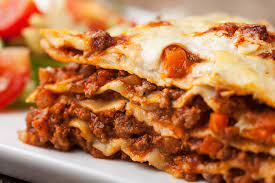

LASAGNA RECIPE

Description
The ground beef lasagna recipe is a classic dish, much loved and very easy to prepare.
Also known as Bolognese lasagna, due to its origins in Bologna,
Italy, this recipe has conquered the world! Check out how to do it!
Ingredients
500g lasagna pasta
2 boxes of cream
2 spoons of wheat flour
500g of mozzarella
2 glassess of milk
3 spoons of oil
3 crushed garlic cloves
500 g of ground beef
3 spoons of butter
500 g of ham
Salt
1 grated onion
1 box of tomato sauce
1 package of grated cheese
Steps
1 Lasagna
Cook the pasta according to the manufacturer's instructions,
pour it into a refractory with ice water to prevent it from sticking and set aside.
2 Bolognese sauce
Saute the garlic, onion, ground meat, tomato sauce,
cook for 3 minutes and set aside.
3 White sauce
Melt the margarine, add 3 tablespoons of wheat flour and stir.
4 Pour in the milk little by little and continue stirring.
5 Assembly
Pour part of the Bolognese sauce into a dish, half the pasta, half the ham,
half the mozzarella, all the white sauce and the rest of the pasta.
6 Repeat layers until the edge of the container.
7 Finish with grated cheese and place in a preheated oven (220° C) for about 20 minutes.